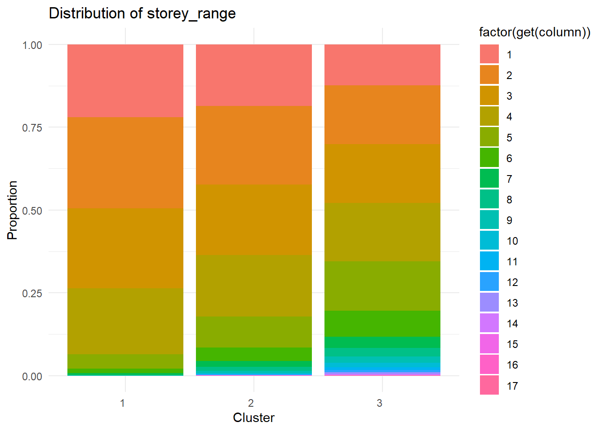
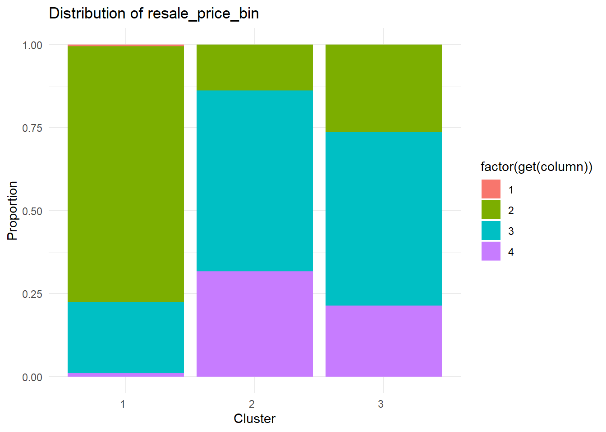

pacman::p_load(tidyverse, DT, summarytools,ggplot2,ggstatsplot)Take-home_Ex04
NOTE
Our group decided to split the part in this Take-home Exercise. This Take-home Exercise will be focusing on data preparation, confirmatory data analysis, clustering and decision tree. While my group mate will be focusing on EDA and other parts.
1 Getting Started
1.1 Download Data
The data is sourced from the Kaggle dataset “Resale HDB Flat Prices 2012 - 2023”, which comprises four CSV files as follows:
The research for this project will be limited to the recent 10 years, from 01/01/2013 to 31/12/2023. Therefore, the required data files are the following three:
resale-flat-prices-based-on-registration-date-from-mar-2012-to-dec-2014.csv
resale-flat-prices-based-on-registration-date-from-jan-2015-to-dec-2016.csv
ResaleflatpricesbasedonregistrationdatefromJan2017onwards.csv
1.2 Load R Packages
R packages required:
tidyverse for processing datasets, inside this package we will use:
readr for reading CSV files
dplyr for operations such as filtering, selecting, transforming, summarizing, and joining data
DT for the creation of interactive HTML tables from R data frames
summarytools for generating a descriptive statistical summary of the data frame
2 Data Preparation
2.1 Import Data
The necessary .CSV files will be imported as a list of CSV files, then compiled into a single dataframe using R.
First, let’s take a look at the three CSV files and check their difference.
#read .csv data files
data1 <- read.csv("data/resale-flat-prices-based-on-registration-date-from-mar-2012-to-dec-2014.csv")
glimpse(data1)Rows: 52,203
Columns: 10
$ month <chr> "2012-03", "2012-03", "2012-03", "2012-03", "2012-…
$ town <chr> "ANG MO KIO", "ANG MO KIO", "ANG MO KIO", "ANG MO …
$ flat_type <chr> "2 ROOM", "2 ROOM", "3 ROOM", "3 ROOM", "3 ROOM", …
$ block <chr> "172", "510", "610", "474", "604", "154", "110", "…
$ street_name <chr> "ANG MO KIO AVE 4", "ANG MO KIO AVE 8", "ANG MO KI…
$ storey_range <chr> "06 TO 10", "01 TO 05", "06 TO 10", "01 TO 05", "0…
$ floor_area_sqm <dbl> 45, 44, 68, 67, 67, 68, 67, 67, 67, 67, 68, 67, 68…
$ flat_model <chr> "Improved", "Improved", "New Generation", "New Gen…
$ lease_commence_date <int> 1986, 1980, 1980, 1984, 1980, 1981, 1978, 1979, 19…
$ resale_price <dbl> 250000, 265000, 315000, 320000, 321000, 321000, 32…#read .csv data files
data2 <- read.csv("data/resale-flat-prices-based-on-registration-date-from-jan-2015-to-dec-2016.csv")
glimpse(data2)Rows: 37,153
Columns: 11
$ month <chr> "2015-01", "2015-01", "2015-01", "2015-01", "2015-…
$ town <chr> "ANG MO KIO", "ANG MO KIO", "ANG MO KIO", "ANG MO …
$ flat_type <chr> "3 ROOM", "3 ROOM", "3 ROOM", "3 ROOM", "3 ROOM", …
$ block <chr> "174", "541", "163", "446", "557", "603", "709", "…
$ street_name <chr> "ANG MO KIO AVE 4", "ANG MO KIO AVE 10", "ANG MO K…
$ storey_range <chr> "07 TO 09", "01 TO 03", "01 TO 03", "01 TO 03", "0…
$ floor_area_sqm <dbl> 60, 68, 69, 68, 68, 67, 68, 68, 67, 68, 67, 68, 68…
$ flat_model <chr> "Improved", "New Generation", "New Generation", "N…
$ lease_commence_date <int> 1986, 1981, 1980, 1979, 1980, 1980, 1980, 1981, 19…
$ remaining_lease <int> 70, 65, 64, 63, 64, 64, 64, 65, 62, 69, 60, 64, 65…
$ resale_price <dbl> 255000, 275000, 285000, 290000, 290000, 290000, 29…#read .csv data files
data3 <- read.csv("data/ResaleflatpricesbasedonregistrationdatefromJan2017onwards.csv")
glimpse(data3)Rows: 169,584
Columns: 11
$ month <chr> "2017-01", "2017-01", "2017-01", "2017-01", "2017-…
$ town <chr> "ANG MO KIO", "ANG MO KIO", "ANG MO KIO", "ANG MO …
$ flat_type <chr> "2 ROOM", "3 ROOM", "3 ROOM", "3 ROOM", "3 ROOM", …
$ block <chr> "406", "108", "602", "465", "601", "150", "447", "…
$ street_name <chr> "ANG MO KIO AVE 10", "ANG MO KIO AVE 4", "ANG MO K…
$ storey_range <chr> "10 TO 12", "01 TO 03", "01 TO 03", "04 TO 06", "0…
$ floor_area_sqm <dbl> 44, 67, 67, 68, 67, 68, 68, 67, 68, 67, 68, 67, 67…
$ flat_model <chr> "Improved", "New Generation", "New Generation", "N…
$ lease_commence_date <int> 1979, 1978, 1980, 1980, 1980, 1981, 1979, 1976, 19…
$ remaining_lease <chr> "61 years 04 months", "60 years 07 months", "62 ye…
$ resale_price <dbl> 232000, 250000, 262000, 265000, 265000, 275000, 28…Observation from the above glimpse:
The data file “mar-2012-to-dec-2014” is missing the “remaining_lease” column.
The “remaining_lease” column in “jan-2015-to-dec-2016” is of integer data type.
The “remaining_lease” column in “Jan-2017-onwards” is of character data type.
All other column names and data types are identical across the three data files.
2.2 Merge Data
Before merging the three data files, the following steps need to be performed:
Step 1. Add a column named “remaining_lease” to the “mar-2012-to-dec-2014” data file.
Formula of the column “remaining_lease”
According to research, the tenure of Singapore HDB properties is 99 years.
Thus, the value of “remaining_lease” is calculated as 99 - (month - lease_commence_date). Note that “month” stands for the date of HDB resale in the datasets.
Step 2. Delete the original “remaining_lease” column in “jan-2015-to-dec-2016” and “Jan-2017-onwards” data file, and create new “remaining_lease” columns with the same formula as above.
# Calculate remaining lease based on the provided formula
data1 <- data1 %>%
mutate(remaining_lease = 99 - (as.numeric(substr(month, 1, 4)) - lease_commence_date))
# delete original remaining_lease column and create a new one
data2 <- data2 %>%
select(-remaining_lease) %>%
mutate(remaining_lease = 99 - (as.numeric(substr(month, 1, 4)) - lease_commence_date))
data3 <- data3 %>%
select(-remaining_lease) %>%
mutate(remaining_lease = 99 - (as.numeric(substr(month, 1, 4)) - lease_commence_date))Then, we can start merging the three files together.
# Merge data1, data2, and data3
combined_data <- bind_rows(data1, data2, data3)2.3 Extract Data
To be able to extract the data from 2013 to 2023, we need to do the follow steps:
Step 1. Make sure the data type of column “month” is date-type.
Step 2. Extract data in 2013-2023.
# convert data type of "month" column to date
combined_data$month <- as.Date(paste0(combined_data$month, "-01"), format = "%Y-%m-%d")
# Extract data in 2013-2023
extract_data <- combined_data %>%
filter(month >= as.Date("2013-01-01") & month <= as.Date("2023-12-31"))2.4 Check Data Health
Now that we have a single dataframe, we first check the health of the dataframe by:
using glimpse() to look at the structure of the dataframe, data types of the columns, and some values of the dataframe,
using datatable() from the DT package to view the dataframe more interactively,
using duplicate() to check the dataframe for any duplicated entries using duplicate(),
using summary() to check the distribution of values,
using descr() to show the descriptive statistics of non-numerical variables.
glimpse(extract_data)Rows: 238,519
Columns: 11
$ month <date> 2013-01-01, 2013-01-01, 2013-01-01, 2013-01-01, 2…
$ town <chr> "ANG MO KIO", "ANG MO KIO", "ANG MO KIO", "ANG MO …
$ flat_type <chr> "2 ROOM", "2 ROOM", "2 ROOM", "3 ROOM", "3 ROOM", …
$ block <chr> "510", "314", "323", "170", "174", "445", "607", "…
$ street_name <chr> "ANG MO KIO AVE 8", "ANG MO KIO AVE 3", "ANG MO KI…
$ storey_range <chr> "01 TO 03", "01 TO 03", "04 TO 06", "07 TO 09", "0…
$ floor_area_sqm <dbl> 44, 44, 44, 61, 60, 67, 68, 67, 68, 67, 74, 67, 68…
$ flat_model <chr> "Improved", "Improved", "Improved", "Improved", "I…
$ lease_commence_date <int> 1980, 1978, 1977, 1986, 1986, 1979, 1980, 1980, 19…
$ resale_price <dbl> 253000, 270000, 283000, 305000, 320000, 325000, 32…
$ remaining_lease <dbl> 66, 64, 63, 72, 72, 65, 66, 66, 65, 66, 66, 65, 66…datatable(head(extract_data),
class= "compact",
rownames = FALSE,
width="100%",
options = list(pageLength = 10,scrollX=T))str(extract_data[duplicated(extract_data),])'data.frame': 610 obs. of 11 variables:
$ month : Date, format: "2013-03-01" "2013-04-01" ...
$ town : chr "JURONG EAST" "BUKIT BATOK" "TOA PAYOH" "TOA PAYOH" ...
$ flat_type : chr "3 ROOM" "3 ROOM" "3 ROOM" "5 ROOM" ...
$ block : chr "252" "523" "57" "81" ...
$ street_name : chr "JURONG EAST ST 24" "BT BATOK ST 52" "LOR 5 TOA PAYOH" "LOR 4 TOA PAYOH" ...
$ storey_range : chr "01 TO 03" "01 TO 03" "01 TO 03" "19 TO 21" ...
$ floor_area_sqm : num 67 60 61 122 60 146 74 67 67 93 ...
$ flat_model : chr "New Generation" "Improved" "Standard" "Improved" ...
$ lease_commence_date: int 1985 1987 1973 1997 1986 1991 1984 1972 1979 2010 ...
$ resale_price : num 343000 315000 320000 880000 300000 720000 388000 292000 356000 600000 ...
$ remaining_lease : num 71 73 59 83 72 77 70 58 65 96 ...summary(extract_data) month town flat_type block
Min. :2013-01-01 Length:238519 Length:238519 Length:238519
1st Qu.:2016-07-01 Class :character Class :character Class :character
Median :2019-05-01 Mode :character Mode :character Mode :character
Mean :2019-01-13
3rd Qu.:2021-10-01
Max. :2023-12-01
street_name storey_range floor_area_sqm flat_model
Length:238519 Length:238519 Min. : 31.00 Length:238519
Class :character Class :character 1st Qu.: 76.00 Class :character
Mode :character Mode :character Median : 94.00 Mode :character
Mean : 96.99
3rd Qu.:112.00
Max. :280.00
lease_commence_date resale_price remaining_lease
Min. :1966 Min. : 140000 Min. :42.00
1st Qu.:1984 1st Qu.: 360000 1st Qu.:64.00
Median :1993 Median : 447000 Median :74.00
Mean :1994 Mean : 478311 Mean :74.66
3rd Qu.:2003 3rd Qu.: 563000 3rd Qu.:85.00
Max. :2022 Max. :1500000 Max. :98.00 descr(extract_data)Non-numerical variable(s) ignored: month, town, flat_type, block, street_name, storey_range, flat_modelDescriptive Statistics
extract_data
N: 238519
floor_area_sqm lease_commence_date remaining_lease resale_price
----------------- ---------------- --------------------- ----------------- --------------
Mean 96.99 1994.22 74.66 478310.91
Std.Dev 24.17 13.32 12.97 160952.26
Min 31.00 1966.00 42.00 140000.00
Q1 76.00 1984.00 64.00 360000.00
Median 94.00 1993.00 74.00 447000.00
Q3 112.00 2003.00 85.00 563000.00
Max 280.00 2022.00 98.00 1500000.00
MAD 26.69 13.34 14.83 143812.20
IQR 36.00 19.00 21.00 203000.00
CV 0.25 0.01 0.17 0.34
Skewness 0.28 0.18 0.02 1.04
SE.Skewness 0.01 0.01 0.01 0.01
Kurtosis -0.11 -0.98 -1.04 1.28
N.Valid 238519.00 238519.00 238519.00 238519.00
Pct.Valid 100.00 100.00 100.00 100.00Observation from the above:
From
glimpse(), we can see the data types of all variables. There are four numerical variables: floor_area_sqm, lease_commence_date, resale_price, remaining_lease. Seven categorical variables: month, town, flat_type, block, street_name, storey_range, flat_model. Variable town, flat_type, block, street_name, storey_range, flat_model are all character-type.From
glimpse(), we can see that there are a total of 238,519 rows and 11 columns. Combining theLengthof categorical variables seen insummary()and theN.Validfromdescr()for numerical variables, we find that each variable has 238,519 values, indicating that there are no missing values in this dataframe.From
duplicate(), we can see that there are 610 records have duplicate rows. We speculate that it is caused by duplicate data entry.
After the above observations, we are going to process the data to make it more suitable for our subsequent analysis.
Step 1. Convert all character-type variables to factor-type variables so that we can analyze the distribution of the different values of categorical variables in subsequent analyses.
# Convert all character-type variables to factor-type variables.
extract_data <- as.data.frame(lapply(extract_data, function(x) {
if(is.character(x)) {
return(factor(x))
} else {
return(x)
}
}))Step 2. Remove all the duplicate rows.
extract_data <- distinct(extract_data)Check duplicates again by the code chunk below:
str(extract_data[duplicated(extract_data),])'data.frame': 0 obs. of 11 variables:
$ month : 'Date' num(0)
$ town : Factor w/ 26 levels "ANG MO KIO","BEDOK",..:
$ flat_type : Factor w/ 7 levels "1 ROOM","2 ROOM",..:
$ block : Factor w/ 2699 levels "1","10","100",..:
$ street_name : Factor w/ 567 levels "ADMIRALTY DR",..:
$ storey_range : Factor w/ 17 levels "01 TO 03","04 TO 06",..:
$ floor_area_sqm : num
$ flat_model : Factor w/ 21 levels "2-room","3Gen",..:
$ lease_commence_date: int
$ resale_price : num
$ remaining_lease : num 3 Save Data
We will save this dataframe as a rds object for faster loading of data in the future.
write_rds(extract_data, "data/resale_hdb.rds")4. Comfirmatory Data Analysis
Confirmatory data analysis (CDA) is a type of data analysis that seeks to confirm or validate hypotheses or theories based on existing data. Unlike exploratory data analysis (EDA), which is more open-ended and aims to discover patterns and relationships in data, CDA starts with specific hypotheses or models that the researcher wants to test using the data.
4.1 Load Processed data
We will reload the processed data for confirmatory data analysis.
resale_hdb <- read_rds("data/resale_hdb.rds")4.2 Distribution of numerical & categorical variables
The instruction is to analyze what factors impact the “resale_price” column in this “resale_hdb” dataset, and how visualizing the distribution of each numerical and categorical column is important for this analysis.
Visualizing the distribution of each column in the dataset is crucial for understanding the patterns, trends and relationships within the data that could influence the resale price.
Identify skewness and outliers: Plotting the distribution of numerical columns like “floor_area_sqm” and “resale_price” can reveal if the data is skewed or contains outliers. Skewed distributions or extreme outliers can distort analyses and should be properly handled.
Spot patterns and trends: Visualizing categorical columns like “flat_type”, “town” and “flat_model” as bar charts or pie charts can uncover which categories are most frequent. Segmenting resale prices by these categories could reveal useful patterns, like certain towns or flat models being associated with higher prices.
Show the code
# Set a larger plot window size
options(repr.plot.width=12, repr.plot.height=12)
# Plot the distribution of numerical columns
par(mfrow=c(3, 3), mar=c(3, 3, 1, 1)) # Set the layout of the plots and reduce margins
numerical_cols <- c("floor_area_sqm", "lease_commence_date", "resale_price", "remaining_lease")
for (col in numerical_cols) {
hist(resale_hdb[[col]], main=col, xlab="", col="skyblue", border="white")
}
# Plot the distribution of categorical columns
categorical_cols <- c("month", "town", "flat_type", "storey_range", "flat_model")
for (col in categorical_cols) {
barplot(table(resale_hdb[[col]]), main=col, col="skyblue", border="white")
}
Observations
Based on the distributions shown in the plots, several observations can be made about the resale HDB dataset:
- Most of the flats have a floor area between 60-80 square meters, with some larger flats over 100 sqm. The distribution is right-skewed.
- The lease commencement dates are concentrated in the late 1970s through 1990s, with peaks around 1980 and fewer flats from 2000 onwards. This suggests an older housing stock.
- Resale prices are widely distributed from under $200,000 to over $1,000,000, but most fall between $200,000-600,000. A few high-priced outliers are visible.
- The remaining lease years are spread out, with most between 50-100 years, but some below 50 years. Lease length likely impacts resale values.
- The transaction months span 2013-2021, with the most sales in 2013, fewer in 2017, and a rebound in early 2021. Market conditions seem to fluctuate over time.
- Most of the transactions are for flats in Ang Mo Kio town, with fewer in Geylang and Sengkang. Location is likely a price factor.
- The majority of flats are 3 ROOM, with fewer 1 ROOM and 5 ROOM. Flat type and size probably influence prices. Most flats fall in the 01 TO 03 and 04 TO 06 storey ranges, with the fewest in the highest 37 TO 39 range. Floor level may affect prices.
- Flat models are split mainly between Improved, New Generation and a small number of simplified flats. The flat model could correlate with resale prices.
4.3 Correlation matrix of munerical variables
In order to perform further analysis and modelling, it is essential to explore the correlation between variables. - When building predictive models, correlation plots can guide feature selection by highlighting variables that are strongly correlated with the target variable (like resale price). Strongly correlated predictors may be good candidates to include in the model. - If two variables are very strongly correlated, they may provide redundant information. Correlation plots can identify opportunities to drop one of the variables or combine them into a single feature, simplifying the model.
Show the code
# Filter out numerical columns
numerical_cols <- c("floor_area_sqm", "lease_commence_date", "resale_price", "remaining_lease")
numerical_data <- resale_hdb[numerical_cols]
# Calculate the correlation matrix
correlation_matrix <- cor(numerical_data)
# Plot a heatmap of the correlation matrix
library(ggplot2)
library(reshape2)
Attaching package: 'reshape2'The following object is masked from 'package:tidyr':
smithsShow the code
correlation_melted <- melt(correlation_matrix)
ggplot(correlation_melted, aes(Var1, Var2, fill=value)) +
geom_tile(color="white") +
scale_fill_gradient2(low="blue", high="red", mid="white",
midpoint=0, limit=c(-1,1), space="Lab",
name="Correlation") +
theme_minimal() +
theme(axis.text.x = element_text(angle = 45, hjust = 1),
panel.grid.major = element_blank(),
panel.border = element_blank(),
axis.title.x = element_blank(),
axis.title.y = element_blank()) +
coord_fixed()In summary, if we were building a model to predict resale prices, a good initial set of features based on this correlation analysis would be:
- Floor area
- Remaining lease OR lease commencement date (but not both) The low-to-moderate correlations suggest these features capture somewhat independent information relevant to predicting prices. Of course, other factors like location, storey, and flat model would also be worth considering in combination with these.
The critical takeaway is that very strongly correlated predictors (like remaining lease and commencement date) should not be included together as they provide redundant information and can cause model instability. The correlation matrix allows us to be parsimonious and strategic in selecting an optimal set of features.
Show the code
# Install and load the necessary package
library(rcompanion)Warning: package 'rcompanion' was built under R version 4.3.3Show the code
# Identify the categorical variables
categorical_vars <- c("flat_type", "storey_range", "town", "flat_model")
# Create an empty matrix to store Cramér's V values
cramer_matrix <- matrix(nrow = length(categorical_vars), ncol = length(categorical_vars),
dimnames = list(categorical_vars, categorical_vars))
# Function to calculate Cramér's V
cramer_v <- function(cont_table) {
chi_sq <- chisq.test(cont_table)$statistic
n <- sum(cont_table)
min_dim <- min(nrow(cont_table), ncol(cont_table))
sqrt(chi_sq / (n * (min_dim - 1)))
}
# Perform chi-square tests and calculate Cramér's V for each pair of variables
for (i in 1:(length(categorical_vars)-1)) {
for (j in (i+1):length(categorical_vars)) {
var1 <- categorical_vars[i]
var2 <- categorical_vars[j]
# Create a contingency table
cont_table <- table(resale_hdb[[var1]], resale_hdb[[var2]])
# Perform chi-square test
chi_sq <- chisq.test(cont_table)
# If the association is significant (p < 0.05), calculate Cramér's V
if (chi_sq$p.value < 0.05) {
cramer_val <- cramer_v(cont_table)
cramer_matrix[var1, var2] <- cramer_val
cramer_matrix[var2, var1] <- cramer_val
}
}
}Warning in chisq.test(cont_table): Chi-squared approximation may be incorrectWarning in chisq.test(cont_table): Chi-squared approximation may be incorrect
Warning in chisq.test(cont_table): Chi-squared approximation may be incorrect
Warning in chisq.test(cont_table): Chi-squared approximation may be incorrect
Warning in chisq.test(cont_table): Chi-squared approximation may be incorrect
Warning in chisq.test(cont_table): Chi-squared approximation may be incorrect
Warning in chisq.test(cont_table): Chi-squared approximation may be incorrect
Warning in chisq.test(cont_table): Chi-squared approximation may be incorrect
Warning in chisq.test(cont_table): Chi-squared approximation may be incorrect
Warning in chisq.test(cont_table): Chi-squared approximation may be incorrect
Warning in chisq.test(cont_table): Chi-squared approximation may be incorrect
Warning in chisq.test(cont_table): Chi-squared approximation may be incorrectShow the code
short_labels <- c("Type", "Storey", "Town", "Model")
# Create a heatmap of the Cramér's V matrix with shorter labels
heatmap(cramer_matrix,
col = colorRampPalette(c("blue", "white", "red"))(100),
main = "Cramér's V Matrix",
xlab = "Categorical Variables",
ylab = "Categorical Variables",
scale = "none",
margins = c(10, 10),
labRow = short_labels, # Use shorter labels for rows
labCol = short_labels, # Use shorter labels for columns
cex.axis = 0.8,
cex.lab = 0.8)- The strong association between “town” and “flat_model” suggests that certain towns may have distinct distributions of flat models. This could indicate that specific flat models are more prevalent in certain areas.
- The moderate associations of “storey_range” with “flat_type” and “flat_model” imply that the storey range of a flat may be related to its type and model. For example, certain flat types or models might be more common in specific storey ranges. The relatively weaker associations of “flat_type” with other variables suggest that the flat type may have less influence on the other categorical variables compared to the relationships among the other variables.
4.4 Hypothesis Testing
4.4.1 ANOVA test: Town vs. Resale Price
The ANOVA test in this context helps us understand the impact of the factors on the ‘resale_price’ variable. The code chunk below test on the the variable “town” and “resale_price”
Show the code
anova_result <- aov(resale_price ~ town, data=resale_hdb)
# Visualize ANOVA results
library(ggplot2)
plot_ANOVA <- ggplot(resale_hdb, aes(x=town, y=resale_price)) +
geom_boxplot(fill="skyblue") +
labs(title="ANOVA: Town vs. Resale Price", x="Town", y="Resale Price") +
theme_minimal()+
theme(axis.text.x = element_text(angle = 90, vjust = 0.5, hjust=1))
print(plot_ANOVA)Show the code
# Summary of ANOVA results
summary(anova_result) Df Sum Sq Mean Sq F value Pr(>F)
town 25 7.262e+14 2.905e+13 1269 <2e-16 ***
Residuals 237883 5.444e+15 2.289e+10
---
Signif. codes: 0 '***' 0.001 '**' 0.01 '*' 0.05 '.' 0.1 ' ' 1A small p-value from an ANOVA test indicates that there is strong evidence against the null hypothesis, which suggests that the mean ‘resale_price’ is the same across all ‘towns’. In other words, the p-value indicates that the ‘town’ variable significantly affects the ‘resale_price’. Therefore, with a very small p-value, we would reject the null hypothesis and conclude that there is a statistically significant difference in ‘resale_price’ among the different ‘towns’.
4.4.2 Non-parametric Test of town and flat type
The code chunk below is Pearson’s chi-squared test, which assesses the association between two categorical variables. It allows us to explore the relationship between variables.
Show the code
plot_barstats_town <- function(metric = "town", minvisitors = 30, testtype = "np", conf = 0.95) {
metric_text = case_when(
metric == "remaining_lease" ~ "Remaining Lease",
metric == "storey_range" ~ "Storey Range",
metric == "flat_type" ~ "Flat Type",
TRUE ~ metric
)
hdbdata_barstats <- resale_hdb
hdbdata_barstats %>%
ggbarstats(x = flat_type, y = !!sym(metric),
xlab = "Flat Type", ylab = metric_text,
type = testtype, conf.level = conf,
palette = "Set2", legend = "top") +
coord_flip() +
labs(fill = "Flat Type", x = "Town", y = "Percentage") +
theme(legend.position = "top",axis.title.y = element_text(hjust = -10))
}
plot_barstats_town(metric = "town", minvisitors = 30, testtype = "np", conf = 0.95)
key observations from the plot:
“MULTI-GENERATION” flats are more prevalent in towns like Yishun, Woodlands, and Tampines, while they are least common in towns like Bishan, Bukit Batok, and Ang Mo Kio. “EXECUTIVE” flats have a higher percentage in towns such as Pasir Ris, Serangoon, and Marine Parade, compared to other towns. Larger flat types (“5 ROOM,” “4 ROOM,” and “3 ROOM”) generally make up a significant portion of the housing distribution across all towns. Smaller flat types (“2 ROOM” and “1 ROOM”) have a relatively lower percentage across most towns, with a slightly higher presence in towns like Kallang/Whampoa, Bukit Merah, and Central Area.
5. Clustering
Clustering is an unsupervised machine learning technique that aims to group similar data points together based on their inherent characteristics or features. In this analysis, we explore two popular clustering methods, K-means clustering and latent clustering analysis, to gain insights into the patterns and structures within the housing resale prices dataset.
The dataset contains information about resale prices of housing units in Singapore, along with various attributes such as town, flat type, storey range, floor area, flat model, lease commence date, and remaining lease. By applying clustering techniques, we aim to uncover hidden groupings or segments within the data that share similar characteristics and pricing patterns.
5.1 K-means clustering
K-means clustering is a centroid-based algorithm that partitions the data into a specified number of clusters (K). It iteratively assigns each data point to the nearest centroid (cluster center) based on a distance metric, typically Euclidean distance. The algorithm optimizes the cluster assignments by minimizing the within-cluster sum of squared distances.
Show the code
# Load required packages
library(dplyr)
library(caret)Warning: package 'caret' was built under R version 4.3.3Loading required package: lattice
Attaching package: 'caret'The following object is masked from 'package:purrr':
liftShow the code
library(cluster)
library(factoextra)Warning: package 'factoextra' was built under R version 4.3.3Welcome! Want to learn more? See two factoextra-related books at https://goo.gl/ve3WBaShow the code
# Load the data
data<- read_rds("data/resale_hdb.rds")
data <- subset(data, select = -c(block, street_name))
# Check for missing values and infinite/NaN values
missing_cols <- colSums(is.na(data)) > 0
infinite_cols <- sapply(data, function(x) any(!is.finite(x)))
# Label encoding for categorical columns
categorical_cols <- sapply(data, is.factor)
data_encoded <- data
for (col in names(data)[categorical_cols]) {
data_encoded[[col]] <- as.integer(factor(data_encoded[[col]]))
}
# Convert all columns to numeric
data_encoded <- data.frame(lapply(data_encoded, as.numeric))
# Check for missing values in data_encoded
missing_encoded <- colSums(is.na(data_encoded))
if (any(missing_encoded > 0)) {
cat("Columns with missing values in data_encoded:\n")
print(missing_encoded[missing_encoded > 0])
} else {
cat("No missing values found in data_encoded.\n")
}No missing values found in data_encoded.Show the code
# Check for infinite values in data_encoded
infinite_encoded <- sapply(data_encoded, function(x) any(!is.finite(x)))
if (any(infinite_encoded)) {
cat("Columns with infinite values in data_encoded:\n")
print(names(data_encoded)[infinite_encoded])
} else {
cat("No infinite values found in data_encoded.\n")
}No infinite values found in data_encoded.Show the code
# Set the number of clusters
k <- 3 # Determine the optimal number of clusters before running this
# Run k-means clustering on the encoded data
km.res <- kmeans(data_encoded, centers = k)
# Add cluster assignments to the original data
data$cluster <- km.res$cluster
# Visualize clusters
fviz_cluster(km.res, data = data_encoded)Show the code
# Visualize the distribution for each column variable for each cluster
library(ggplot2)
# Function to create stacked bar chart for a given column
plot_stacked_bar <- function(data, column) {
ggplot(data, aes(x = factor(cluster), fill = factor(get(column)))) +
geom_bar(position = "fill") +
labs(x = "Cluster", y = "Proportion", title = paste("Distribution of", column)) +
theme_minimal()
}
# Plot stacked bar charts for each categorical column
for (col in names(data)[categorical_cols]) {
print(plot_stacked_bar(data, col))
}5.2 Latent Clustering Analysis
On the other hand, latent clustering analysis, also known as model-based clustering or finite mixture modeling, assumes that the data is generated from a mixture of underlying probability distributions. Each cluster is represented by a different distribution, and the goal is to identify the parameters of these distributions and assign each data point to the most likely cluster. Latent clustering analysis provides a probabilistic framework for modeling the data and allows for the estimation of the optimal number of clusters based on statistical criteria.
Show the code
# Load required packages
library(dplyr)
library(poLCA)Warning: package 'poLCA' was built under R version 4.3.3Loading required package: scatterplot3dLoading required package: MASS
Attaching package: 'MASS'The following object is masked from 'package:dplyr':
selectShow the code
library(MASS)
# Load the data
data<- read_rds("data/resale_hdb.rds")
# Drop the "block" and "street_name" columns
data <- subset(data, select = -c(block, street_name))
# Discretize continuous variables
data$resale_price_bin <- cut(data$resale_price, breaks = c(0, 200000, 400000, 600000, Inf),
labels = c("Low", "Medium", "High", "Very High"))
data$floor_area_sqm_bin <- cut(data$floor_area_sqm, breaks = c(0, 50, 100, 150, Inf),
labels = c("Small", "Medium", "Large", "Very Large"))
data$remaining_lease_bin <- cut(data$remaining_lease, breaks = c(0, 50, 75, 100, Inf),
labels = c("Short", "Medium", "Long", "Very Long"))
# Convert categorical variables to factors and recode them as positive integers
categorical_vars <- c("town", "flat_type", "storey_range", "flat_model",
"lease_commence_date", "resale_price_bin", "floor_area_sqm_bin", "remaining_lease_bin")
for (var in categorical_vars) {
data[[var]] <- as.integer(factor(data[[var]]))
}
# Perform latent clustering analysis
lca_model <- poLCA(formula = cbind(town, flat_type, storey_range, flat_model,
lease_commence_date, resale_price_bin,
floor_area_sqm_bin, remaining_lease_bin) ~ 1,
data = data, nclass = 3, maxiter = 1000, graphs = FALSE)Conditional item response (column) probabilities,
by outcome variable, for each class (row)
$town
Pr(1) Pr(2) Pr(3) Pr(4) Pr(5) Pr(6) Pr(7) Pr(8) Pr(9) Pr(10)
class 1: 0.1051 0.1185 0.0170 0.0556 0.0518 0.0132 0.0025 0.0154 0.0071 0.0475
class 2: 0.0156 0.0362 0.0284 0.0323 0.0224 0.0473 0.0037 0.0033 0.0729 0.0092
class 3: 0.0155 0.0167 0.0019 0.0233 0.0514 0.0473 0.0000 0.0086 0.0411 0.0178
Pr(11) Pr(12) Pr(13) Pr(14) Pr(15) Pr(16) Pr(17) Pr(18) Pr(19) Pr(20)
class 1: 0.0510 0.0509 0.0312 0.0445 0.0503 0.0150 0.0015 0.0000 0.0402 0.0000
class 2: 0.0136 0.0568 0.0200 0.0954 0.0172 0.0039 0.0636 0.0515 0.0105 0.0310
class 3: 0.0154 0.0379 0.0109 0.0578 0.0277 0.0000 0.0086 0.1645 0.0430 0.0519
Pr(21) Pr(22) Pr(23) Pr(24) Pr(25) Pr(26)
class 1: 0.0000 0.0309 0.0585 0.0560 0.0376 0.0986
class 2: 0.0784 0.0205 0.0978 0.0210 0.0964 0.0512
class 3: 0.1807 0.0030 0.0280 0.0187 0.0734 0.0552
$flat_type
Pr(1) Pr(2) Pr(3) Pr(4) Pr(5) Pr(6) Pr(7)
class 1: 0.0014 0.0217 0.6807 0.2962 0.0000 0.0000 0e+00
class 2: 0.0000 0.0000 0.0000 0.2788 0.5502 0.1702 8e-04
class 3: 0.0000 0.0340 0.1471 0.8185 0.0004 0.0000 0e+00
$storey_range
Pr(1) Pr(2) Pr(3) Pr(4) Pr(5) Pr(6) Pr(7) Pr(8) Pr(9) Pr(10)
class 1: 0.2201 0.2759 0.2405 0.1993 0.0438 0.0126 0.0054 0.0022 0.0002 0.0000
class 2: 0.1865 0.2359 0.2133 0.1860 0.0933 0.0414 0.0174 0.0124 0.0058 0.0035
class 3: 0.1241 0.1771 0.1781 0.1760 0.1487 0.0788 0.0341 0.0260 0.0190 0.0131
Pr(11) Pr(12) Pr(13) Pr(14) Pr(15) Pr(16) Pr(17)
class 1: 0.0000 0.0000 0.0000 0.0000 0e+00 0e+00 0e+00
class 2: 0.0012 0.0011 0.0011 0.0006 1e-04 1e-04 0e+00
class 3: 0.0074 0.0070 0.0061 0.0027 9e-04 6e-04 2e-04
$flat_model
Pr(1) Pr(2) Pr(3) Pr(4) Pr(5) Pr(6) Pr(7) Pr(8) Pr(9) Pr(10)
class 1: 0.0000 0e+00 0.0004 0.0000 0.0000 0.2497 0e+00 0.0000 0.1097 0.000
class 2: 0.0000 2e-04 0.0035 0.0856 0.0145 0.3869 3e-04 0.0637 0.2892 0.004
class 3: 0.0012 0e+00 0.0000 0.0000 0.0287 0.0000 0e+00 0.0000 0.6879 0.000
Pr(11) Pr(12) Pr(13) Pr(14) Pr(15) Pr(16) Pr(17) Pr(18) Pr(19) Pr(20)
class 1: 0.0000 0e+00 0.4442 0.0000 0.0000 0e+00 0.1332 0.0609 0.0018 0.0000
class 2: 0.0005 8e-04 0.0000 0.1232 0.0003 2e-04 0.0000 0.0250 0.0000 0.0000
class 3: 0.0516 0e+00 0.0000 0.2171 0.0012 0e+00 0.0048 0.0000 0.0000 0.0075
Pr(21)
class 1: 0.000
class 2: 0.002
class 3: 0.000
$lease_commence_date
Pr(1) Pr(2) Pr(3) Pr(4) Pr(5) Pr(6) Pr(7) Pr(8) Pr(9) Pr(10)
class 1: 3e-04 0.017 0.0043 0.0168 0.0281 0.0157 0.0149 0.0194 0.0325 0.0346
class 2: 0e+00 0.000 0.0000 0.0001 0.0001 0.0000 0.0001 0.0001 0.0015 0.0049
class 3: 0e+00 0.000 0.0000 0.0000 0.0000 0.0000 0.0000 0.0000 0.0000 0.0000
Pr(11) Pr(12) Pr(13) Pr(14) Pr(15) Pr(16) Pr(17) Pr(18) Pr(19) Pr(20)
class 1: 0.0463 0.0386 0.0826 0.0665 0.0664 0.0457 0.0267 0.0390 0.0848 0.1350
class 2: 0.0056 0.0057 0.0091 0.0069 0.0066 0.0044 0.0053 0.0105 0.0463 0.0491
class 3: 0.0000 0.0000 0.0000 0.0000 0.0000 0.0000 0.0000 0.0000 0.0000 0.0000
Pr(21) Pr(22) Pr(23) Pr(24) Pr(25) Pr(26) Pr(27) Pr(28) Pr(29) Pr(30)
class 1: 0.0571 0.0589 0.0480 0.0112 0.0014 0.0000 0.0014 0.0031 0.0011 0.001
class 2: 0.0249 0.0308 0.0567 0.0507 0.0156 0.0025 0.0400 0.0499 0.0119 0.037
class 3: 0.0000 0.0000 0.0000 0.0000 0.0002 0.0000 0.0000 0.0017 0.0012 0.000
Pr(31) Pr(32) Pr(33) Pr(34) Pr(35) Pr(36) Pr(37) Pr(38) Pr(39) Pr(40)
class 1: 0.0007 0.0000 0.0006 0.0000 0.0000 0.0000 0.0000 0.0000 0.0000 0.0000
class 2: 0.0558 0.0535 0.0516 0.0551 0.0442 0.0557 0.0322 0.0441 0.0218 0.0097
class 3: 0.0042 0.0345 0.0269 0.0193 0.0343 0.0441 0.0388 0.0458 0.0336 0.0203
Pr(41) Pr(42) Pr(43) Pr(44) Pr(45) Pr(46) Pr(47) Pr(48) Pr(49) Pr(50)
class 1: 0.0000 0.0000 0.0000 0.0000 0.0000 0.0000 0.0000 0.0000 0.0000 0.0000
class 2: 0.0062 0.0002 0.0091 0.0005 0.0005 0.0080 0.0047 0.0072 0.0042 0.0195
class 3: 0.0233 0.0120 0.0152 0.0278 0.0218 0.0307 0.0746 0.0784 0.0541 0.1323
Pr(51) Pr(52) Pr(53) Pr(54) Pr(55) Pr(56)
class 1: 0.0000 0.0000 0.0000 0.0000 0e+00 0
class 2: 0.0155 0.0123 0.0100 0.0021 1e-04 0
class 3: 0.0771 0.0620 0.0648 0.0205 4e-04 0
$resale_price_bin
Pr(1) Pr(2) Pr(3) Pr(4)
class 1: 0.0059 0.7694 0.2147 0.0099
class 2: 0.0000 0.1372 0.5460 0.3169
class 3: 0.0004 0.2632 0.5231 0.2133
$floor_area_sqm_bin
Pr(1) Pr(2) Pr(3) Pr(4)
class 1: 0.0213 0.9719 0.0065 0.0003
class 2: 0.0000 0.0000 0.9756 0.0244
class 3: 0.0335 0.9665 0.0000 0.0000
$remaining_lease_bin
Pr(1) Pr(2) Pr(3)
class 1: 0.0550 0.9432 0.0018
class 2: 0.0002 0.4771 0.5227
class 3: 0.0000 0.0176 0.9824
Estimated class population shares
0.316 0.4423 0.2417
Predicted class memberships (by modal posterior prob.)
0.3152 0.4431 0.2417
=========================================================
Fit for 3 latent classes:
=========================================================
number of observations: 237909
number of estimated parameters: 392
residual degrees of freedom: 237517
maximum log-likelihood: -2980507
AIC(3): 5961798
BIC(3): 5965866
G^2(3): 1597035 (Likelihood ratio/deviance statistic)
X^2(3): 59240209478 (Chi-square goodness of fit)
Show the code
# Get the cluster assignments
data$cluster <- lca_model$predclass
# Print the model summary
summary(lca_model) Length Class Mode
llik 1 -none- numeric
attempts 1 -none- numeric
probs.start 8 -none- list
probs 8 -none- list
probs.se 8 -none- list
P.se 3 -none- numeric
posterior 713727 -none- numeric
predclass 237909 -none- numeric
P 3 -none- numeric
numiter 1 -none- numeric
probs.start.ok 1 -none- logical
coeff 1 -none- logical
coeff.se 1 -none- logical
coeff.V 1 -none- logical
eflag 1 -none- logical
npar 1 -none- numeric
aic 1 -none- numeric
bic 1 -none- numeric
Nobs 1 -none- numeric
Chisq 1 -none- numeric
predcell 10 data.frame list
Gsq 1 -none- numeric
y 8 data.frame list
x 1 data.frame list
N 1 -none- numeric
maxiter 1 -none- numeric
resid.df 1 -none- numeric
time 1 difftime numeric
call 6 -none- call Show the code
# Visualize the distribution for each column variable for each cluster
library(ggplot2)
# Function to create stacked bar chart for a given column
plot_stacked_bar <- function(data, column) {
ggplot(data, aes(x = factor(cluster), fill = factor(get(column)))) +
geom_bar(position = "fill") +
labs(x = "Cluster", y = "Proportion", title = paste("Distribution of", column)) +
theme_minimal() +
theme(axis.text.x = element_text(angle = 0, hjust = 1))
}
# Plot stacked bar charts for each categorical variable
for (var in categorical_vars) {
print(plot_stacked_bar(data, var))
}


6 Decision tree Analysis
The HDB Resale Price dataset contains information about resale transactions of public housing properties in Singapore. The dataset includes various features such as the month of the transaction, town, flat type, storey range, floor area, flat model, lease commence date, and the resale price. The goal is to build predictive models that can estimate the resale price of HDB flats based on these features.
6.1 Regression Tree
The decision tree model for the HDB Resale Price dataset will start with the entire dataset at the root node and then recursively split the data based on the features that provide the most information gain. The splitting process continues until a stopping criterion is met, such as reaching a maximum depth or a minimum number of samples in a leaf node. The resulting tree structure will allow us to make predictions by traversing the tree based on the feature values of a given HDB flat.
pacman::p_load(dplyr, rpart, rpart.plot)Show the code
library(rpart)
library(rpart.plot)
# Load the data
data<- read_rds("data/resale_hdb.rds")
# Drop the "block" and "street_name" columns
data <- subset(data, select = -c(block, street_name))
# Assuming your dataset is named 'data'
# Convert relevant columns to factors
data$town <- as.factor(data$town)
data$flat_type <- as.factor(data$flat_type)
data$storey_range <- as.factor(data$storey_range)
data$flat_model <- as.factor(data$flat_model)
# Build the decision tree model
model <- rpart(resale_price ~ ., data = data, method = "anova")
# Visualize the decision tree
rpart.plot(model, main = "Decision Tree for Resale Price")